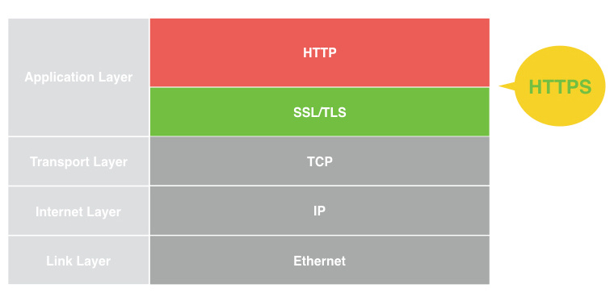
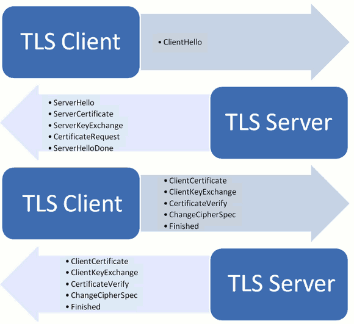
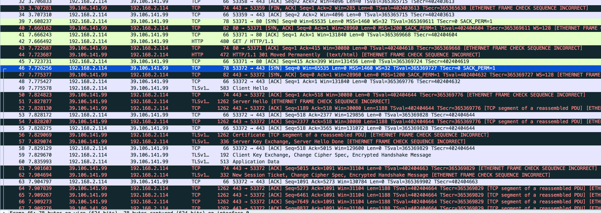

前些日子，面试官问我 HTTP 和 HTTPS 的区别的时候？
我总是说 HTTPS 就是在传输层和应用层之间加了一个基于TLS的加密协议。

后来，反复审视自己的问题。觉得了解一个东西不要太表面。他也没深问，我也没往下说。
HTTP 存在的风险（切身经历）
为什么我的 js 代码偶尔无法运行
我自己是写了一个线上的 WEB 应用，偶尔就会接到反馈说我的网页怎么点击按钮没反应。
然后我反复纠结是否是我 js 代码写的有问题，无论怎么改，都会出现十次有两三次的现象，按钮无效，无法提交表单。
细心观察发现，那些无法执行的时候，页面上总是有些乱七八糟的广告，要么就是有个移动流量的圆球，要么就是什么吸引眼球的点击网页。
接下来，来分析一下为什么会这样。
如果发起一个网络请求，是需要经过 TCP 三次握手的。
- A发送带有 seq = x （随机数） 的 SYN 报文给 B
- B 发送带有 seq = y （随机数） 和 ack = x+1 的 [SYN,ACK] 报文给 A
- A发送带有 seq = x+1 和 ack = y+1 的 [ACK] 报文给B
此时 TCP 连接建立。 A 和 B 可以通过连接发送和接收数据，知道连接中断。
连接中断有两种情况：
FIN
正常关闭，需要四次挥手。
- A 发送 FIN ， 进入 fin-wait 状态
- B 发送 ACK ，进入 close-wait 状态，A收到后进入 fin-wait-2 状态
- B 发送 FIN ，进入 last-ack 状态
- A 接收到 B 发送的 ACK 后，进入 time-wait 状态，然后等待 2个 MSL 就进入 closed 状态， B 接收到ACK 后也进入 closed 状态。
RST
在 TCP 的设计中，RST 用于关闭异常连接，应对例如服务器意外重启等。
- A 发送 RST
- B 收到 RST，直接关闭连接，无需 ACK 确认。
这种通过握手建立通信，并且在信道上进行数据传输的方式给中间人带来了可乘之机。中间人保存个 TCP 连接的连接信息 （客户端信息，服务端细心、请求方向 TCP 等待序列号和应答方向 TCP 等待序列号），然后当过滤到需要劫持的数据包时，找到该 TCP 数据包所属 TCP 连接的连接信息，根据所抓取的 TCP 数据包信息中的请求方向 TCP 等待序列号和应答方向 TCP 等待序列号。有了这两个序号，就可以构造有效的数据包对 TCP 连接的对方进行欺骗了。
ISP 最喜欢的攻击：
把你劫持到运营商的缓存
现象：当你用 HTTP GET 请求某个资源时，对方秒回 [FIN, PSH, ACK]，HTTP Response 为 302 ，指向 ISP 缓存的地址 （一般为纯 IP）
比如请求某个 国外网站，运营商为了减少出口带宽，减少结算费用，就缓存了国外网站，如果是最新的还好，并且速度也快，如果不是的话，就悲剧了。
劫持页面，在 DOM 中插入 script 加载乱七八糟的东西
这个就是我所遭遇的
在我的 HTTP 网站上面，如果用手机访问，如果你是移动，就会出现一个移动流量的球球，如果是联通就会出现联通的，等等。
然后抓了一下包，发现，在被劫持的页面中，多了一句 script 代码，然后这个 script 会加载流量球所需的全部文件，为了加载这个东西，多发了 好几个 GET 请求，加起来废了几 K 左右的流量。
具体流程是： 运营商先缓存了我的页面，然后发现有人访问这个页面了，那么就把事先插入好 js 代码的网页返回，基本是秒返回的，速度很快，然后真正的包到来的时候，已经被当做乱序包丢掉了。
然后，因为 它的 js 代码 随便插的，毁坏掉了我自己正常的 js 代码，就造成了各种按钮不起作用。
最后解决方法
我用了 HTTPS ，再也不用担心了。
HTTPS 的运行机制
具体实现细节
SSL/TLS 协议希望达到：
- 所有嘻嘻都是加密传输，第三方无法窃听
- 具有校验机制，一旦被篡改，通信双方会立刻发现
- 配备证书，防止身份被冒充
简而言之： SSL/TLS 协议基本思想是公钥加密法 ，客户端先向服务端索要公钥，然后使用公钥加密信息，服务器收到密文后，用自己的私钥解密。
为什么需要证书？
证书是经过第三方认证的，只要把服务端的公钥放在证书里面，然后只需要验证证书是可信的，那么公钥也是可信的。
在非对称加密中（公钥加密），计算量太大，需要减少加密耗时。
在每一次对话中，客户端和服务端都生成一个秘钥，用它来加密信息。采用对称加密，所以运算速度非常快，而服务器公钥只用于加密对话秘钥本身，这样就减少了加密运算的消耗时间。
SSL/TLS 协议基本过程
- 客户端向服务器端索要并通过服务器证书验证公钥
- 双方协商生成秘钥
- 双方采用秘钥进行加密通信
SSL/TLS 握手过程

下面是通过 wireshark 抓包的图：

可以发现，基本和上面的 TLS 握手一致。
首先先通过三次握手建立 TCP 连接，然后：
客户端发出请求 （ClientHello）通过 Content-type 告诉服务端我要握手了。
客户端向服务器提供一些信息：
支持的协议版本，比如 TLS 版本 。握手一种是基于 RSA，一种是基于 DH 。
一个客户端生成的随机数（后面对生成对称加密秘钥有用）
支持的加密方法，比如 RSA 公钥加密
支持的压缩算法
服务器回应 （ServerHello）
服务端收到请求后，向客户端回应，包含以下内容：
确认使用的加密通信协议版本，比如 TLS 1.0 版本。如果服务器和浏览器支持的协议版本不一致，服务器将关闭加密通信。
一个服务器生成的随机数（后面对生成对称秘钥有用）
确认使用的加密方法，比如 RSA 公钥加密
服务端证书
（如果需要对客户端的身份认证，还需要客户端为服务端提供证书）
- 客户端回应
客户端收到服务器回应后，首先验证服务端整数。如果证书不可信，那么浏览器会警告，让用户选择是否继续访问。如果证书没问题，客户端就会取出服务器的公钥，然后向服务器发送以下信息：
一个随机数。该随机数用服务器公钥加密，防止被窃听
编码改变通知，表示随后的信息都将用双方商定的加密方法和秘钥发送信息。
客户端握手结束通知。并且同时发送前面发送内容的 hash 值，用来提供给服务端比对，确认中途消息没有被篡改。
- 服务器收到回应
服务器收到客户端的第三个随机数后， 通过自己的私钥解密这个随机数，然后，通过商量好的加密方法，计算加密秘钥。然后发送一下信息：
编码改变通知，表示随后的信息都用双方协定好的加密方法和秘钥发送。
服务端握手结束，并且发送前面发送过所有内容的 hash 供客户端校验。
整个握手结束。接下来，客户端与服务器进入加密通信，就完全使用普通的 HTTP 协议，只不过用 秘钥 加密内容进行传输。
为什么需要三个随机数，是为了保证随机数的随机性，SSL 协议不信任每个主机都能产生完全随机的随机数，通过三个随机数，就可以十分接近随机，如果只有一个随机数，那么就有可能是伪随机，并且被攻击者猜出来。
思考
整个握手阶段都不加密，也没办法加密。整个机密过程如果被窃听，只要猜出第三个加密随机数，就可以窃听，如何保证足够安全？
理论上，服务器的公钥足够长，那么第三个随机数可以保证不被破解。但是为了足够安全，可以考虑把握手阶段的算法从默认的 RSA 算法改为 DH 算法。采用 DH 算法后，第三个随机数不需要传递，双方只要交换各自的参数，就可以算出这个随机数，这样就提高了安全性。
关于 HTTPS 优化的方案？
如果每次 HTTPS 会话都需要重新建立的话，那么是有一定开销的，虽然单个开销非常小，但是如果并发量很大的话，也需要去优化。目前有两种方法可以恢复原来的 session，一种叫 session ID 另一种叫 session ticket。这样就不需要重新建立 TSL 握手。
session ID 就是把每次会话的编号保存，如果对话中断，下次重连的时候，只要客户端给出这个编号，并且服务器有这个编号的记录，那么双方就可以继续用已有的秘钥进行加密传输，不需要重新生成。但是 session ID 往往只保存在一台服务器上，如果客户端的请求被发送到另一台服务器就无法恢复。session ticket 就诞生了。
session ticket ， 客户端不再发送 session ID ，而是发送一个上次在服务器对话过程中发过来的 session ticket ，这个 session ticket 是加密的，只有服务器可以解密，其中包含了本次对话的主要信息，如对话秘钥，加密方法。当服务器收到 session ticket 以后，就可以不必重新生成对话秘钥了。
其中，在 TLS 中，还存在对证书的检查，如吊销检查，它是同步的还是异步的？
同步的。如果异步检查，有可能导致浏览器发送信息给了未验证的主机后，过一段时间才发现整数倍吊销无效，所以必须同步。
HTTPS 是否会拖慢性能？
具体看情况。浏览器在加密 session ticket3时, 和服务器在接受浏览器返回 session ticket3时, 是非对称加密中可能出现耗时的步骤. 但这个步骤顶多几毫秒, 并且现代化浏览器和 NGINX 已经支持 session 复用, 造成的性能损耗几乎可以忽略不计.
而真正可能拖慢性能的, 只可能是在吊销检查步骤中.
因为上面说了, 吊销状态检查只能是同步的, 那么受到 CA 厂商的部署限制, 极可能会将 CRL 服务器和 OCSP 服务器部署在遥远的小机房, 带宽/链路都是极差的, 这种, DNS 解析和连接 CRL/OCSP 服务器均需要耗时, 此过程的损耗, 是一大批在知乎的所谓专家所言的加密解密过程损耗的数十倍到数百倍.
HTTPS 是否可以使用 CDN 加速，为什么？
可以使用，并且不需要把自己的私钥交给 CDN 服务商，整个 TLS 对话中，服务器公钥和私钥只用到一次。完全可以把私钥留在自己手里，只用来解密对话秘钥，其他步骤让 CDN 服务商去完成。